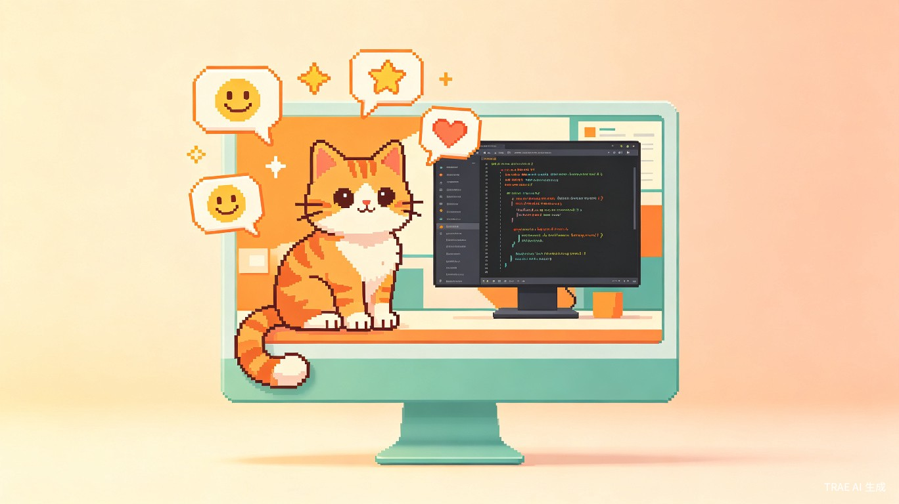
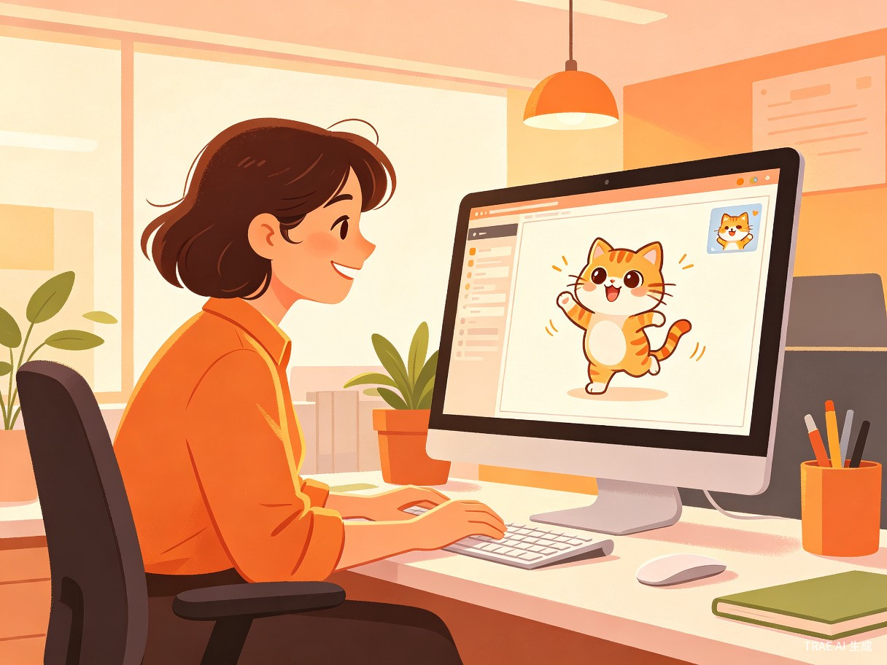
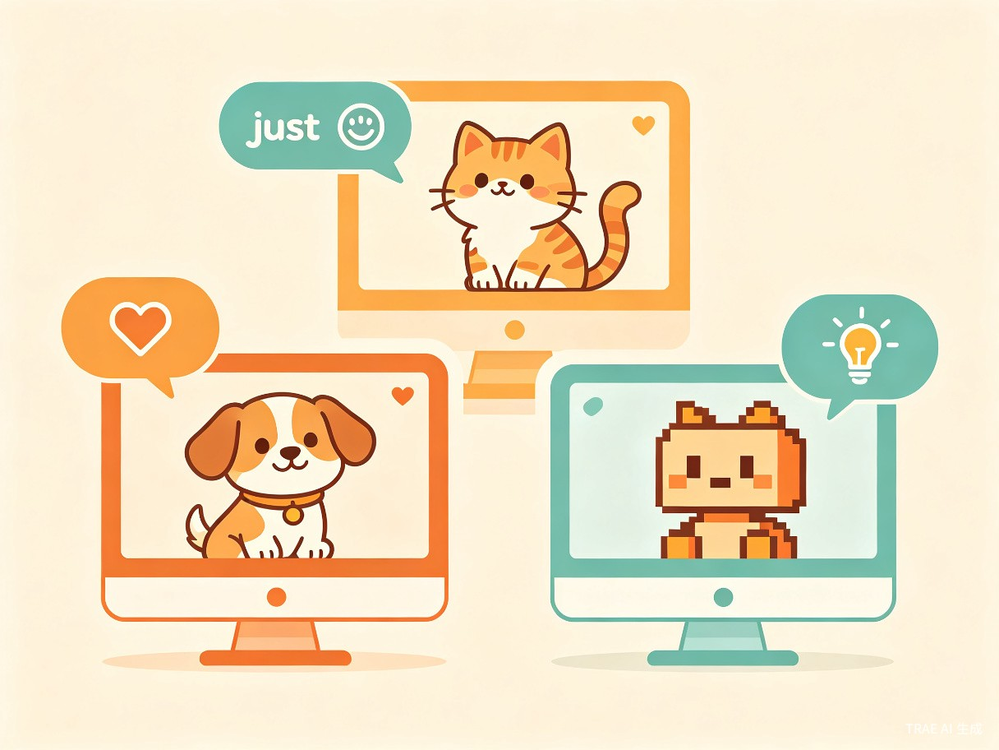

在桌面角落养一只由AI驱动的虚拟宠物，它懂你的情绪、陪你工作、为你的日常增添一份极客浪漫。

长时间面对电脑工作的用户普遍存在孤独感与注意力疲劳的问题。在缺乏社交互动的办公环境中，用户容易陷入机械化的工作节奏，情绪低落却无处宣泄，工作效率和心理健康都受到负面影响。
灵感来源于经典的桌面宠物程序（如20世纪90年代的Desktop Pets）与现代生成式AI能力的结合。我们希望用AI的创造力和理解力，赋予桌面宠物真正的"灵魂"——它不再是只会重复预设动作的程序，而是一个能感知用户状态、生成个性化内容的智能伙伴。
让枯燥的办公桌面，变成一个有温度的小世界。
一款桌面端轻量级应用（支持 Windows / macOS），以悬浮窗口形式常驻桌面角落，通过动画驱动的虚拟宠物角色 + AI生成内容 + 网页内容感知，为用户提供情感陪伴与趣味互动。
我们的核心用户群体覆盖以下几类人群：
长期居家办公，缺少同事间的闲聊和社交互动，容易产生孤独感和工作倦怠。
长时间自习、写论文，需要轻松的情绪调节和陪伴来缓解学业压力。
设计师、程序员等需要长时间专注工作的创意从业者，渴望在枯燥的编码或设计间隙获得灵感与放松。
日常办公场景 — 在处理邮件、文档、表格时，宠物在桌面角落安静陪伴，偶尔弹出励志名言或趣味互动。
网页浏览场景 — 当检测到用户正在浏览美食、旅行、购物等网站时，宠物做出对应的可爱反应（如看到美食网站时流口水）。
休息间隙场景 — 点击宠物触发AI生成的每日笑话、哲学语录或趣味冷知识，为短暂的休息增添乐趣。
深夜加班场景 — 宠物感知到深夜时段，切换为"暖心模式"，提醒用户注意休息，送上温柔的晚安语。

工作中感到疲惫或沮丧时，缺乏即时、低成本的情绪调节方式，只能硬撑或刷手机。
频繁切换社交媒体获取"情绪零食"，反而加剧注意力分散，降低工作效率。
番茄钟、效率工具等虽然实用，但缺乏情感温度，无法提供真正的心理陪伴感。
打开游戏或视频需要切换上下文、投入较多时间，不适合工作间隙的短暂放松需求。

支持多种宠物角色（猫咪、小狗、像素小人等），拥有丰富的待机、互动、情绪动画状态，让桌面角落始终充满生命力。
点击宠物即可触发AI生成的每日笑话、励志名言或哲学语录，每次互动都有新鲜感，利用大语言模型的创造力提供无限内容。
通过浏览器扩展检测用户当前浏览的网页内容，宠物会做出相应的可爱反应——逛美食网站时流口水、看新闻时若有所思、浏览旅游页面时兴奋跳跃。
根据时间段自动调整宠物行为模式：早晨问候、午间提醒休息、深夜暖心关怀，成为真正"懂你"的桌面伙伴。
桌面陪伴宠物具备清晰的商业化路径：基础宠物角色免费使用，通过个性化皮肤、稀有宠物角色、AI内容主题包（如"程序员专属语录"、"治愈系文案"）实现增值付费。同时可与企业协作工具集成，作为员工关怀福利的载体，拓展B端市场。
核心理念：AI桌面陪伴宠物不是又一个效率工具，而是一个"有温度的桌面伙伴"——它用极客的方式，为日常办公注入浪漫与情绪价值，让每一块屏幕都不再冰冷。